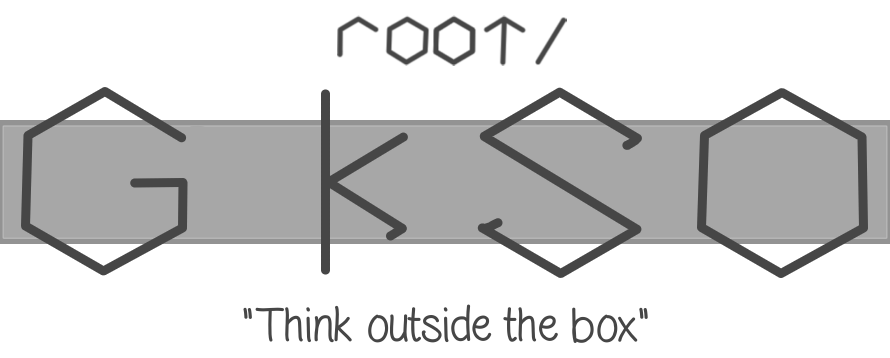
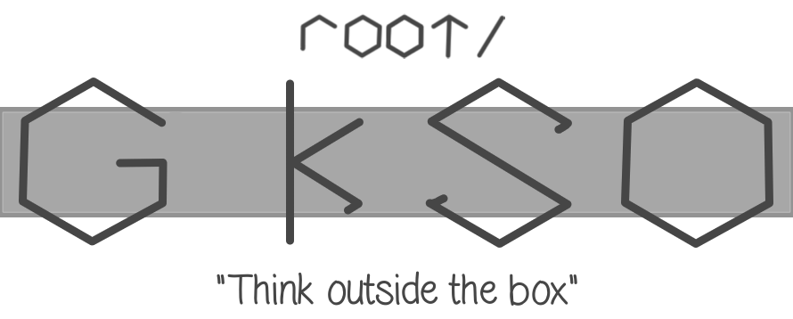

GSmOS is a subsystem project for Windows. It stands for GS mini Operating System that works on windows, which is why it's called subsystem. It has all the basic features, featuring a console look while still keeping your multitask option available, saving your favorite wallpaper you had.